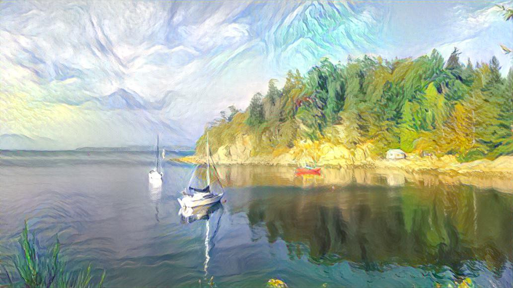

Copyright Throughout a Creative AI Pipeline

My article, “Copyright Throughout a Creative AI Pipeline,” was just published by the Canadian Journal of Law & Technology. It is available open-access here.
This work is increasingly relevant as AI tools such as Dall-E, Stable Diffusion, ChatGPT (and other large-language models—LLMs) are producing arguably novel outputs. And the question of who owns the copyright to the model weights or parameters has become relevant given the leak of the model parameters behind one instance of Facebook’s LLaMa (Large Language Model Meta AI). One Twitter user asks, “Is redistributing the LLaMa weights [] even legal? Can copyright cover a big table of machine generated numbers?” I hope this paper provides a starting point for thinking about these problems.
Abstract
Consider the following fact pattern.
Alex paints some original works on canvas and posts photos of them online. Becca downloads those images and uses them to train an AI (training configures the AI’s model parameters to useful values). Becca posts the resulting trained parameter values on her website under a license that reserves to Becca the right to use the parameters commercially. Cory uses those parameter values in a program that is designed to produce artwork. Cory clicks create and the program produces a work. This work is new to Cory, but it looks a lot like one of Alex’s original canvas images. Cory sells the work. Advise Cory about their potential copyright liability to Alex (for the substantially similar work that the program produced and that Cory subsequently sold) and to Becca (for taking Becca’s parameters and using them commercially, contrary to the license).
Cory clicks create again. The program produces another work, this time quite different from any of Alex’s original paintings. Cory shares new work on Instagram. Danny copies this image from Cory’s Instagram feed and sells a bunch of postcards that feature that image. Advise Danny about their copyright liability to Cory.
These scenarios are not as contrived as they might initially seem. People frequently use copyrighted works when training an AI (more precisely: when training an AI’s parameters). The resulting trained parameters are being shared under licences that assume the parameters are the subject of copyright. People do use these parameters in programs that can produce novel content. The resulting work can be quite surprising to the end-user and there are generally no checks in place to ensure that the new works do not take too directly from the original training data. However, many of the new works will be quite different from any content already in the world. And the end-users of the creative program often claim copyright ownership over the resulting novel work.
I will first present the training and use of a creative program based on a neural network, a popular model that forms the basis of state-of-the-art creative AIs. Then, I will examine each of the issues just raised:
1. Does the person managing the automatic training of a neural network’s parameters obtain a copyright in the resulting trained parameters?
2. Does a person using a program that produces artistic output obtain a copyright in that output?
3. The automatic training of a neural network requires large amounts of example data (a training set). Can images from around the internet be copied for the purpose of training a neural network?
4. What if a person uses an AI to produce a work that looks substantially similar to one of the training examples? Is that an infringement? And who is infringing?
Today’s state-of-the-art “creative” AI tools are based on a technology (neural networks) that serve to separate the programmer and trainer from any of the eventual expression, even the expression stored in the automatically-learned network parameters. It would be very rare that a programmer or trainer might obtain copyright in the output from an automatically trained “creative” AI. However, there are a multitude of ways to use such an AI to produce output, many of which would very well justify awarding copyright to the end-user, especially when they use the AI as an elaborate brush with which to bring their own ideas to life in expression.
The current methods of training these creative AI tools requires large amounts of training data: existing works often protected by copyright. It is unclear whether Canada’s fair dealing user right allows for such copying for the purpose of training a neural network, particularly when not for private purposes. When a fair dealing user right is not available, this copying would be copyright infringement: unauthorized reproduction of existing works. Canada should clarify or expand the fair dealing user right to allow for such copying.
Trainers must be careful that they have not simply embedded a representation of the training examples in the AI. If the AI effectively contains “direct reflections” of the training data such that it regularly reproduces them, distributing such an AI would be copyright infringement. The trainer has a burden to verify that they are not distributing copies of the training data.
This analysis allocates copyright in a manner consistent with a pragmatic conception of creativity and art. It keeps the focus on human expression and allows for free distribution of the material needed for more people to have more practice with creative tools while preserving protection for original expression.
Acknowledgements
I would like to thank Professor Jon Festinger, Q.C., for many helpful discussions while supervising this work and Professor Graham Reynolds for valuable feedback on an earlier draft.
Notes
1. ↑ Sancho McCann, “Copyright Throughout a Creative AI Pipeline” (2021) 19 Can JL & Tech 109.